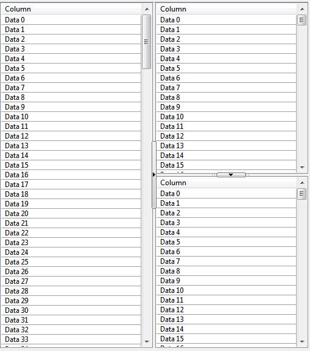
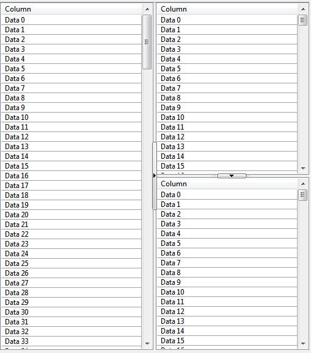
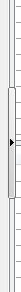
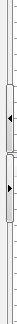

|
class SplitterButton : public StaticRect
SplitterButton widget is similar to Splitter, but the separator line has one or two thin buttons with predefined locations, so when the user clicks on the button, the splitter jumps to every location, indicating with a triangle the direction of the movement.
It holds two child widgets, either vertically or horizontally.
General widget view with horizontal separator line in two position and a vertical line in the right:
  
Detail of thin buttons on vertical separator line, one or two button options:
 
SplitterButton()
Initializes StaticLine.
SplitterButton& Horz(Ctrl &left, Ctrl &right)
Sets splitter to contain two child widgets left and right.
Sets splitter to horizontal mode - separator bar in this mode is vertical.
SplitterButton& Vert(Ctrl& top, Ctrl& bottom)
Sets splitter to contain two child widgets top and bottom.
Sets splitter to vertical mode - separator bar in this mode is horizontal.
SplitterButton &SetPositions(const Vector<int> &positions)
Sets in positions vector the separator line positions in 0 to 10000 units. Minimum number of positions is two.
SplitterButton &SetPositions(int pos1, int pos2)
Sets the two positions of the separator line (pos1 and pos2).
SplitterButton &SetPositions(int pos1, int pos2, int pos3)
Sets the three positions of the separator line (pos1, pos2 and pos3).
SplitterButton &SetInitialPositionId(int id)
Sets the id of the initial separator position between the previously indicated positions with SertPosition().
SplitterButton &SetButtonNumber(int buttonNumber)
Sets the number of buttons:
1: To move the splitter to one side until it arrives to the end so it moves to the other side
2: One to move the splitter to one side and other to move it to the other side
|
{kind=link}
{kind=link}
{kind=link}